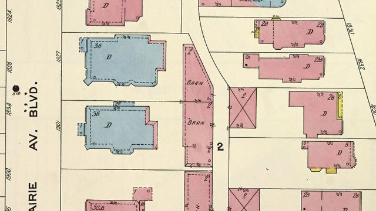
01GatherSources
Maps from the 1830 plat to Sanborn 1911, the 1830, 1840 and 1900 censuses, directories, HABS photographs, Andreas and Wau-Bun.

4D Chicago is a research dataset with a game attached. Each building is broken into facts: its walls, its roof, its dates, its occupants. Every fact carries its source and a grade for how sure that source is. Open any card in the town to read them.
For each archival photograph or engraving, the photographer's camera is solved: the lens, the standpoint and the bearing. Then the app is put at exactly that spot and the two are compared. Over 120 views solved so far.
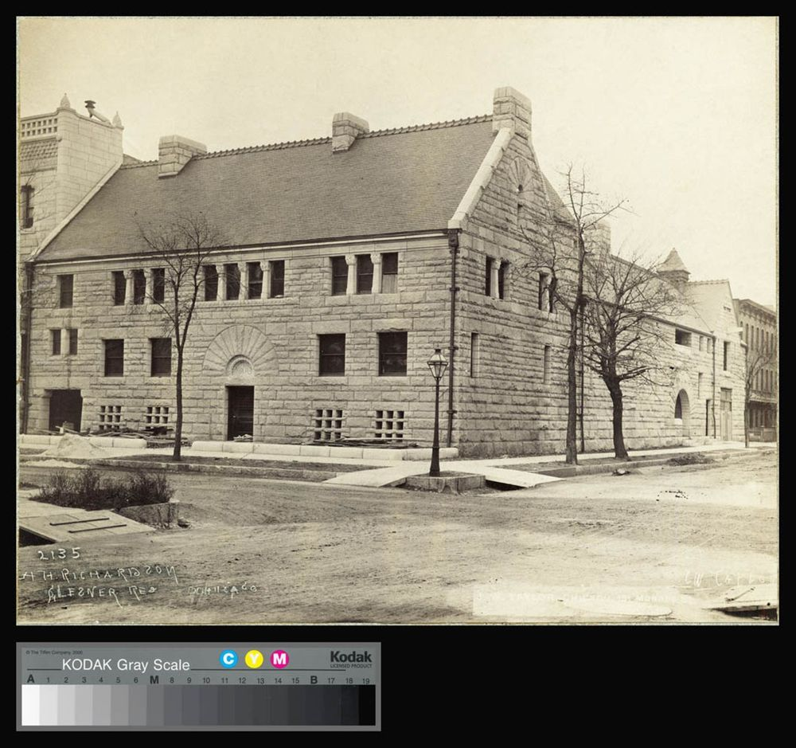
Archive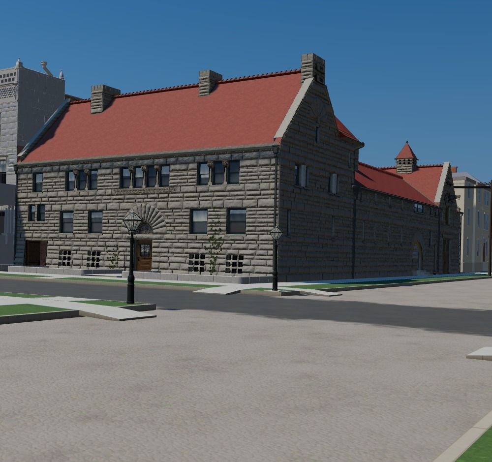
4D · same camera Archive
Archive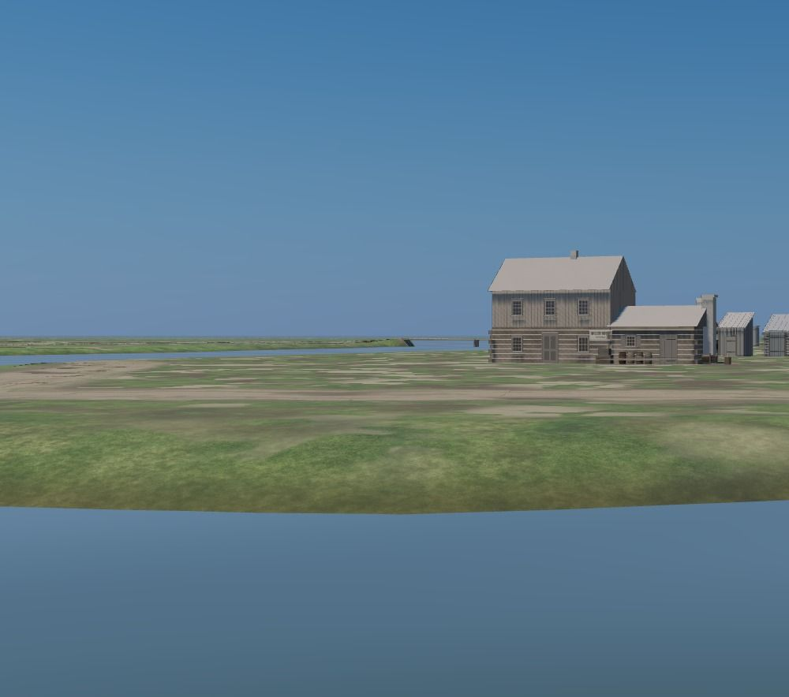
4D · same camera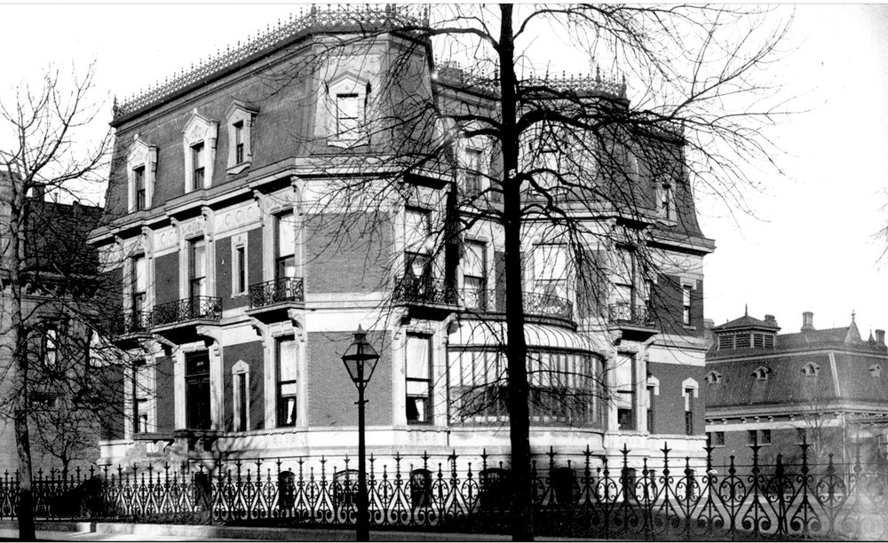
Archive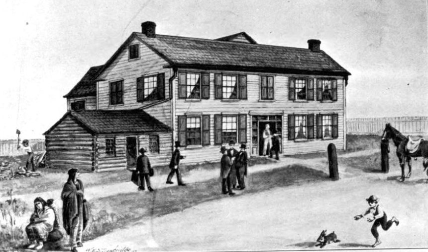
Archive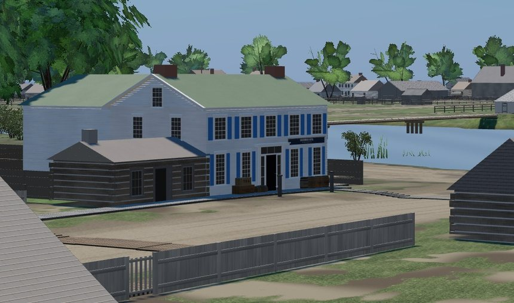
4D · same camera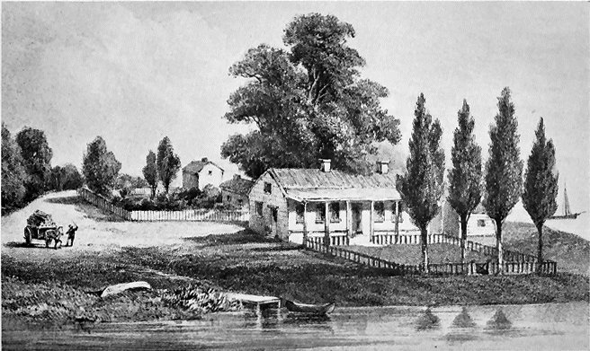
Archive 4D · same camera
4D · same camera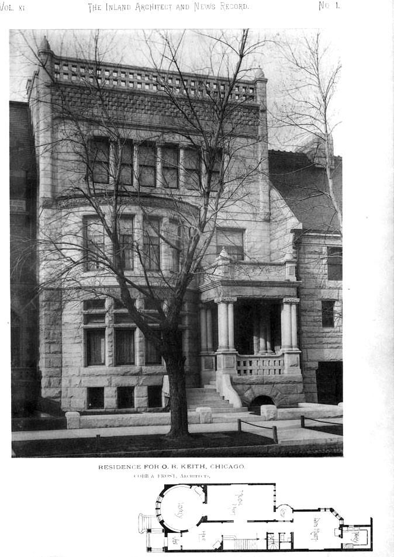
Archive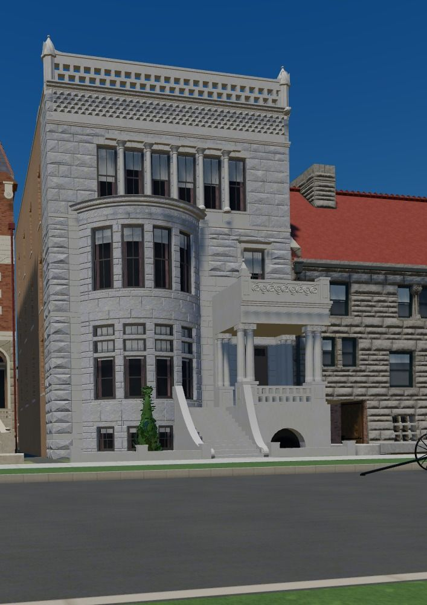
4D · same camera1835 · Lake StWhere a drawing survives, the street is built to it. N. Roswell Gifford drew the first Tremont House with its neighbours along Lake and Dearborn; the stores and taverns beside the hotel take their storeys, roofs, bays and order from it, front by front. What the drawing leaves out is reconstructed and listed as a liberty.

01GatherMaps from the 1830 plat to Sanborn 1911, the 1830, 1840 and 1900 censuses, directories, HABS photographs, Andreas and Wau-Bun.
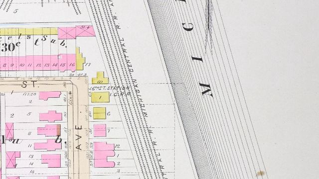
02PlaceMaps pinned to the land-survey grid; river, shore and footprints traced; census lines matched to lots and doors.
 03Grade
03GradeEach picture's camera solved and compared; each fact graded attested, inferred or reconstructed.
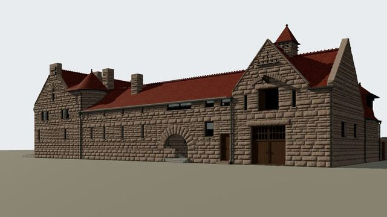
04BuildGenerators drive Blender to build each record into a model, with a sidecar that carries every source along with it.
 05Walk
05WalkOne year at a time streams into the browser, phone or headset. Click a building and its record opens.
Runs in your browser on a computer, a phone or a VR headset. Sign in once and every year is open.
Opens the Temporal Observatory · pick a destination · W A S D to walk, or the thumb stick on a phone